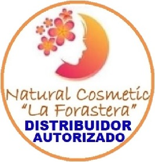
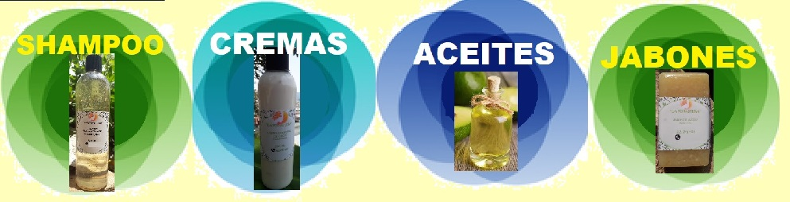
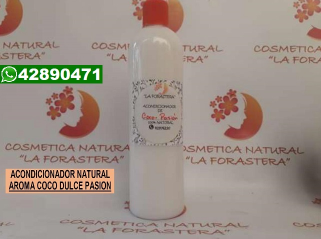

HOLA!
BIENVENIDOS A DETODITO SOMOS DISTRIBUIDORES AUTORIZADOS DE COSMETICA "LA FORASTERA"
Productos la FORASTERA, es una micro empresa dedicada a la fabricacion y distribucion de productos cosmeticos 100% naturales,
utilizando los recursos que nuestra madre tierra nos ofrece y con esto satisfacer las necesidades de sus
clientes, los cuales estan interesados en mantenar niveles adecuados de buena salud utilizando productos de limpieza personal biodegradables.
Se Preseva el medio ambiente y con un toque unico y diseño de calidad en sus productos apoyando la estetica del ser humano.
| ACEITE PARA MASAJES |
| ACEITES MINERALES |
ACONDICIONADOR |
BALSAMO LABIAL NATURAL |
CREMA CORPORAL |
CREMAS CUIDADO DE CUTIS |
| CUIDADO HIGIENICO |
GOTAS PARA CABELLO |
JABONES FACIALES |
MASCARILLAS CAPILARES |
PRODUCTOS VARIOS |
SHAMPOOS |
SPLASH CORPORAL |
J A B O N E S
Los ingredientes de nuestros jabones son 100% naturales, no estan
procesados y no empleamos quimicos que, a largo plazo, dañaran tu
piel. Ademas, obtendras el aspecto saludable que toda piel debe tener,
estos siguen cumpliendo con sus funciones basicas de limpieza,
movilizacion de agentes externos y eliminacion de celulas muertas.
Sus fragancias son naturales y su espuma es escasa, lo que indica
que no contienen sustancias quimicas y dañinas para la salud de la
piel que, a largo plazo, la envejecen y la lesionan. Cosmetica Natural
“La Forastera” sabe suplir las necesidades que tu piel tenga, ya que
podras eliminar la irritabilidad y otros problemas que presentes debido
al uso de jabones quimicos.
Beneficios de nuestros jabones:
Aroma 100% natural
Sus vitaminas ayudan a tratar dolencias cutaneas. ... Multiusos. ...
Libre de sustancias quimicas. ... Cuida el medio ambiente.
JABON CARBoN ACTIVADO
(Para eliminar puntos negros y poros abiertos)
Para piel grasa
Ideal para pieles grasas, elimina espinillas y puntos negros. Absorbe la
grasa y la suciedad de la piel, dejandola limpia y luminosa.
Presentacion 120 gr. Q35.00

JABON PETALOS DE ROSAS
(Humectante) Todo tipo de piel
** Cicatrizante ** Retrasa el envejecimiento ** Elimina impurezas
** Mejora la calidad del cabello y la piel ** Alivia el dolor de cabeza. ** Reafirmante ** Relaja y refresca
Presentacion 120 gramos Q35.00

JABON DE LIMON
(Anti- Acne) Para piel grasa o mixta
** Acaba con las manchas de la piel.
** Debido a que tiene vitamina C, y este es un
** antioxidante efectivo.
** Anti- septico y anti- bacteriano, seca barros y espinillas
** Reduce la grasa de la piel
** Combate el acne
** Exfolia la piel
** Sirve como desodorante.
** EVITAR ASOLEARSE DESPUES DE LA APLICACION
Presentacion 120 gr. Q35.00

JABON DE ALMENDRAS
(Hidratante) Todo tipo de piel
Excelente para tratar diferentes problemas en la piel, sobre todo la sequedad, los
eccemas o el acne. Todo ello se debe a los acidos grasos que contiene, perfectos para hidratar la piel.
Presentacion 120 gr. Q35.00

JABON DE COCO
(Anti-hongos y problemas en la piel)
Para pieles secas
** Es un humectante eficaz, ayuda a mantener la piel hidratada y hermosa.
** Contiene antioxidantes que retrasan la aparicion de arrugas y flacidez.
** Ayuda en el tratamiento de padecimientos como psoriasis, dermatitis, eccema y
otras infecciones.
Presentacion 120 gr. Q35.00

JABON DE CHOCOLATE
(Exfolia pieles grasas)
** Combate las pieles grasas y mixtas, exfoliandolas y eliminando celulas muertas,
dejando los poros libres en la piel.
** Activa la circulacion de cara y cuerpo
** Aroma 100% a chocolate ya que es chocolate artesanal
Presentacion 120 gr. Q35.00

JABON DE AVENA
(Para pieles maduras y sensibles)
** Evita la deshidratacion de la piel
** Ayuda a mantener la piel mas limpia
** Su uso puede ser desde lactantes hasta personas de la tercera edad, ya que es
muy suave con la piel
** Uso para todo tipo de pieles, en especial, pieles delicadas
Presentacion 120 gr. Q35.00

JABON DE ALOE VERA Y EUCALIPTO
(Revitalizante y relajante de la piel)
Todo tipo de piel
** Su uso diario hidrata y suaviza la piel actuando como un excelente regenerador
celular. Debido a su alta penetracion es un potente cicatrizante. Elimina las celulas
muertas de la piel y favorece la salud de los tejidos.
Presentacion 120 gr. Q35.00

JABON DE MIEL
(Hidratante para pieles sensibles)
** Apropiado para todo tipo de piel, especialmente para las mas sensibles y
deshidratadas
** Previene arrugas
** Cicatrizante
** Calma el enrojecimiento cutaneo
** Favorece la reduccion de impurezas.
Presentacion 120 gr. Q35.00

JABON DE MENTA
(Refrescante y Anti-inflamatorio)
Todo tipo de piel
** Alivia la irritacion y comezon en la piel.
** Alivia problemas de la piel como dermatitis
** Combate las bacterias
** Equilibra la produccion de grasa en la piel
** Es muy energetico, estimula la memoria y la concentracion
** Estimula la circulacion en la piel
** Hidrata la piel.
** Desinflama piquetes de mosquitos.
Presentacion 120 gr. Q35.00

JABON DE RUDA
Todo tipo de piel
** En tratamientos para el acne; utiliza a diario este jabon sobre la piel mojada y realiza un
suave masaje con el jabon.
** Baños relajantes, la ruda activa la circulacion, disminuye la hinchazon de las piernas y
ayuda a mitigar los dolores musculares. Evita calambres, contracturas.
** Nos ayuda a relajarnos, su aroma ayuda a reducir la ansiedad, el estres y a calmar los
nervios.
** se utiliza como bactericida. Asegura una limpieza profunda evitando la aparicion de
hongos y/o bacterias. Su aroma evita malos olores corporales.
** Usos esotericos
** Es utilizado para atraer buenas y positivas energias. Se utiliza en baños rituales de
sanaciones, para atraer la buena fortuna, el dinero y el amor. Ayuda a alejar los
pensamientos negativos y pesimistas. El jabon de ruda se utiliza en rituales de limpiezas
energeticas y para alejar envidias, resentimientos.
Presentacion 120 gramos Q35.00

JABON DE ARROZ
(Anti-Manchas) Todo tipo de piel
Perfecto aliado para prevenir y disimular las lineas de expresion, atenua y elimina
las manchas del sol, paño de embarazo, piel dañada con cualquier otro tipo de
mancha, dejandola exfoliada limpia e hidratada.
Presentacion 120 gr. Q35.00

JABON DE MORINGA
(Anti-Envejecimiento) Todo tipo de piel
Excelente jabon antienvejecimiento, debido a la gran cantidad de antioxidantes que
actuan en contra de los radicales libres producidos en el dia a dia. Esta elaborado
tanto con hoja como con extracto de hoja de moringa, ademas de aceite de semilla
de moringa. Tambien ayuda a hidratar y a nutrir la piel.
Presentacion 120 gr. Q35.00
 *************************************************************************************************************************************
*************************************************************************************************************************************
S H A M P O O
La alimentacion, el estres y distintos estilos de vida suele dañar el cuero
cabelludo provocando su debilidad. Tambien, los componentes de
ciertos productos tradicionales pueden afectarlo y provocar que pierda
su brillo. Sabiendo ello, Cosmetica Natural “La Forastera” ha decidido
innovar creando productos que tengan ingredientes naturales, nuestros
shampoo no contienen sal, ni quimicos, ni parabenos, ni siliconas,
haciendo que tu cabello sea mucho mas limpio y apto para todo tipo de
cabello.
SHAMPOO ROSAS
(Humectante y Anti-frizz)
Se ha convertido ultimamente en un poderoso aliado en cuanto a tratamientos para el
cuidado de la belleza de la mujer, puesto que, gracias a su vitamina B, E, entre otros
elementos, lo convierten en un tonico ideal para limpieza del cabello de forma natural sin
ningun tipo de ayuda cosmetica.
Modo de uso: aplicas en melena mojada, restriegas dejas actuar de 5 a10 minutos y
enjuagas, repite la rutina un dia si y un dia no, puedes combinarlo con cualquier
acondicionador u otro shampoo e intercalar su uso.
Presentaciones:
1 litro: Q70.00 -
500ml.: Q40.00 -
300ml.: Q30.00

SHAMPOO ROMERO
(Disminuye la caida capilar)
Es una gran solucion natural para combatir la caida del cabello.
Actua como estimulante capilar, mejorando la estructura, el brillo y la textura del pelo.
Regula la grasa del cabello y el sebo que la produce, para evitar que se reseque y el
cuero cabelludo se irrite.
Modo de uso: aplicas en melena mojada, restriegas dejas actuar de 5 a10 minutos y
enjuagas, repite la rutina un dia si y un dia no, puedes combinarlo con cualquier
acondicionador u otro shampoo e intercalar su uso. (en tonos claros oscurece un tono mas la
melena)
Presentaciones:
1 litro: Q70.00 -
500ml.: Q40.00 -
300ml.: Q30.00

SHAMPOO DE COCO
(Hidratante y alisador)
hidrata y nutre el cabello desde su interior
Fortalece los foliculos pilosos, evitando su caida.
Limpia todo quimico y suciedad en el cabello.
Controla el Frizz y alisa el cabello.
Protege del sol y daños externos.
Modo de uso: aplicas en melena mojada, restriegas dejas actuar de 5 a10 minutos y
enjuagas, repite la rutina un dia si y un dia no, puedes combinarlo con cualquier
acondicionador u otro shampoo e intercalar su uso.
Presentaciones:
1 litro: Q70.00 -
500ml.: Q40.00 -
300ml.: Q30.00

SHAMPOO CHOCOLATE
(Exfoliante de cueros grasosos y humectantes de cabellos gruesos y abundantes)
Exfoliante por naturalidad
Aporta nutrientes esenciales que le brindan al cabello una suavidad y sedosidad.
.
Modo de uso: aplicas en melena mojada, restriegas dejas actuar de 5 a10 minutos y
enjuagas, repite la rutina un dia si y un dia no, puedes combinarlo con cualquier
acondicionador u otro shampoo e intercalar su uso
Presentaciones:
1 litro: Q70.00 -
500ml.: Q40.00 -
300ml.: Q30.00

SHAMPOO DE CAFe
(Estimula el crecimiento capilar)
Cabello mas sedoso
Humectante de hebra capilar
Cabello mas manejable.
Shampoo sin sal.
Modo de uso: aplicas en melena mojada, restriegas dejas actuar de 5 a10 minutos y
enjuagas, repite la rutina un dia si y un dia no, puedes combinarlo con cualquier
acondicionador u otro shampoo e intercalar su uso.
Presentaciones:
1 litro: Q70.00 -
500ml.: Q40.00 -
300ml.: Q30.00

SHAMPOO ALOE VERA
(Para cabellos grasosos y dañados)
Mantiene el cuero cabelludo nutrido e hidratado.
Capaz de suavizar el cabello.
Elimina las celulas muertas acumuladas en el cuero cabelludo.
Fortalece y rehabilita el cabello desde la raiz hasta las puntas.
Modo de uso: aplicas en melena mojada, restriegas dejas actuar de 5 a10 minutos y
enjuagas, repite la rutina un dia si y un dia no si tu melena es grasosa, si es seca usa 2
veces a la semana, puedes combinarlo con cualquier acondicionador u otro shampoo e
intercalar su uso.
Presentaciones:
1 litro: Q70.00 -
500ml.: Q40.00 -
300ml.: Q30.00

SHAMPOO CARBON ACTIVADO
(Elimina caspa humeda y exfolia cueros cabelludos grasosos)
El carbon activado se utiliza para sacar sucio y toxinas del cuero cabelludo, hace una
limpieza profunda mientras remueve acumulacion de productos, elimina caspa y
reduce la grasa excesiva en el cuero cabelludo y el cabello, recomendable para el tipo
de caspa tipo masa o costra en el cuero cabelludo.
Modo de uso: si tienes toda la melena sebosa (raiz, media y puntas) aplicar en toda melena
mojada, dejas reposar de 5 a 10 minutos y enjuagas. Repetir la rutina 1 dia si y 1 dia no
Si tienes el cuero cabelludo grasoso y de medias a puntas seco, aplica solo y directamente al
cuero cabelludo NO MEDIAS A PUNTAS (puedes intercalarlo con otro tipo de shampoo) ya
que puede causar exceso de frizz, repite la rutina 2 o 3 veces por semana, combinalo con
cualquier acondicionador.
Presentaciones:
1 litro: Q70.00 -
500ml.: Q40.00 -
300ml.: Q30.00

SHAMPOO MANZANILLA Y MIEL
(Mantiene y aclara un tono la hebra capilar)
Especial para melenas claras (rubios o castaños naturales o teñidos)
Limpia a profundidad
Deja tu melena mas suave y sedosa
Pueden usarlo niños, adolescentes o adultos (no anti-lagrimas)
Modo de uso: aplicas en melena mojada, restriegas dejas actuar de 5 a10 minutos y
enjuagas, repite la rutina un dia si y un dia no, puedes combinarlo con cualquier
acondicionador u otro shampoo e intercalar su uso.
Presentaciones:
1 litro: Q70.00 -
500ml.: Q40.00 -
300ml.: Q30.00

SHAMPOO COLA DE CABALLO Y EUCALIPTO
(Volumen, engrosamiento, crecimiento y mas cabello)
Oscurece la melena
Fortalece el cabello
Acelera el crecimiento del cabello por su produccion de colageno
Baño relajante en un rico aroma a eucalipto
Estimula el crecimiento de cabello nuevo en el cuero cabelludo.
Modo de uso: aplicas en melena mojada, restriegas dejas actuar de 5 a10 minutos y
enjuagas, repite la rutina un dia si y un dia no, puedes combinarlo con cualquier
acondicionador u otro shampoo e intercalar su uso. (en tonos claros oscurece un tono mas la
melena)
Presentaciones:
1 litro: Q70.00 -
500ml.: Q40.00 -
300ml.: Q30.00

SHAMPOO COCO/ROMERO
(Hidrata y evita la caida capilar)
Una combinacion para que tu cabello brille y deje de verse opaco, al mismo tiempo
que el romero hara que tu melena se vea radiante y con un volumen perfecto,
dejandose de caer y volviendolo cada vez mas fuerte.
Modo de uso: aplicas en melena mojada, restriegas dejas actuar de 5 a10 minutos y
enjuagas, repite la rutina un dia si y un dia no, puedes combinarlo con cualquier
acondicionador u otro shampoo e intercalar su uso. (en tonos claros oscurece un tono mas la
melena).
Presentaciones:
1 litro: Q70.00 -
500ml.: Q40.00 -
300ml.: Q30.00

SHAMPOO DE ARROZ
(Alisador y reparador de puntas abiertas)
Reduce el encrespamiento.
Fortalece el pelo.
Aporta brillo.
Cabello suave y sedoso.
Reduce las puntas abiertas.
Modo de uso: aplicas en melena mojada, restriegas dejas actuar de 5 a10 minutos y
enjuagas, repite la rutina un dia si y un dia no, puedes combinarlo con cualquier
acondicionador u otro shampoo e intercalar su uso.
Presentaciones:
1 litro: Q70.00 -
500ml.: Q40.00 -
300ml.: Q30.00

SHAMPOO BABY BOOM
(Especial para niños)
Aporta brillo y sedosidad
No es pesado para la melena
Da fuerza
A base de aceite de argan
Cabello manejable
Hipo alergenico
NO ANTI-LAGRIMAS
SIN SAL
Modo de uso: aplicas en melena mojada, restriegas dejas actuar de 5 a10 minutos y
enjuagas, repite la rutina un dia si y un dia no, puedes combinarlo con cualquier
acondicionador u otro shampoo e intercalar su uso.
Presentaciones:
1 litro: Q70.00 -
500ml.: Q40.00 -
300ml.: Q30.00


SHAMPOO CAFe Y CANELA
Crecimiento de melena
Nutritivo para tu cuero cabelludo
Da crecimiento a la melena que ya posees
Crecimiento rapido en poco tiempo
Mantiene sana la hebra capilar
Aroma agradable a cafe dulce con canela.
Modo de uso: aplicas en melena mojada, restriegas dejas actuar de 5 a10 minutos y
enjuagas, repite la rutina un dia si y un dia no, puedes combinarlo con cualquier
acondicionador u otro shampoo e intercalar su uso.
Presentaciones:
1 litro: Q70.00 -
500ml.: Q40.00 -
300ml.: Q30.00

SHAMPOO CON KERATINA NATURAL
Elige tu shampoo favorito con keratina natural
Es fundamental para la restauracion de la fibra capilar y mejora el brillo, la flexibilidad
y la textura.
Sobre todo en cabellos sin densidad y con volumen, la keratina elimina el
encrespamiento, controla rizos rebeldes y ayuda a eliminar el frizz.
Modo de uso: aplicas en melena mojada, restriegas dejas actuar de 5 a10 minutos y
enjuagas, repite la rutina un dia si y un dia no, puedes combinarlo con cualquier
acondicionador u otro shampoo e intercalar su uso. (en tonos claros oscurece un tono mas la
melena).
Presentaciones: 500ml.: Q70.00
 *************************************************************************************************************************************
*************************************************************************************************************************************
ACONDICIONADOR
Las ventajas de este producto, compañero casi inseparable del shampoo es
que mantiene el cabello hidratado, aporta suavidad y facilita el peinado, le
aporta brillo al pelo, ayuda a manejarlo mejor en mojado y seco, previene
la rotura del cabello, las puntas abiertas y otros daños y, ademas, al
hidratar el cabello, contribuye a reducir la electricidad estatica (frizz).
ACONDICIONADOR NATURAL
Desenreda el cabello y hace su textura mas suave.
Cierra la cuticula y hace el cabello mas manejable.
Hace que el cabello luzca brillante y lleno.
Controla la electricidad estatica.
Facilita el peinado.
Humecta el cabello.
Refuerza y reduce el quiebre.
Modo de uso: Aplicas despues de haberte enjuagado tu shampoo favorito, de medias a puntas la cantidad
que tu melena necesite, dejas reposar de 5 a 10minutos y luego enjuagas, repite la rutina en cada baño.
AROMAS
Solicita la pareja de tu acondicionador con tu shampoo favorito o estos otros aromas, limon, menta,
chocolate o naranja.
Presentaciones:
Litro: Q70.00 -
500ml: Q40.00 -
300ml: Q30.00 -
Super Boom litro: Q85.00 -
Super Boom 500ml: Q60.00 -
Super Boom 300ml: Q45.00 -
Coco Pasion 300ml: Q35.00 -
Coco Pasion 500ml: Q45.00 -
Coco Pasion litro: Q75.00 -
Con keratina 500ml: Q70.00 -
Con keratina coco pasion: Q75.00

ACONDICIONADOR NATURAL
AROMA COCO DULCE PASION
Presentacion:
Coco Pasion 300ml: Q35.00 -
Coco Pasion 500ml: Q45.00 -
Coco Pasion litro: Q75.00 -
Con keratina 500ml: Q70.00 -
Con keratina coco pasion: Q75.00

*************************************************************************************************************************************
ACEITE PARA MASAJES
Los masajes terapeuticos ayudan a la relajacion mediante la
manipulacion de los tejidos suaves del cuerpo. Estos ayudan a reducir
los dolores musculares, favorecer la eliminacion de toxinas
y retencion de liquidos y mejorar la circulacion sanguinea y linfatica.
Ademas, los masajes no solo tienden a mejorar el aspecto de la piel,
sino que tambien proporcionan un estado de calma en nuestro cuerpo
y mente.
ACEITES PARA MASAJES
(Lavanda)
combate la depresion, la ansiedad y el estres, ayudando a relajar la mente, resultando
su aplicacion en momentos de mayor tension.
ideal para el tratamiento del insomnio, el stress y dolores de cabeza. Es un aceite
sumamente relajante, el cual brinda paz y armonia a todo nuestro ser.
util para la sensacion de agobio que perciben las personas muy nerviosas o inquietas,
o que pasan por un periodo de desequilibrio afectivo.
Es un gran regenerador de las celulas cutaneas.
usado en pieles deshidratadas, y agredidas. Asi como para pieles sensibles, con
psoriasis o heridas.
ACEITES PARA MASAJES
(Frutos rojos citricos)
Exotico - Energizante - antioxidante - Hidrata - calma la piel
Presentacion:.00
ACEITES PARA MASAJES
Menta)
Descongestivo - Estimulante - Analgesico - Antiinflamatorio - Antiespasmodico - Expectorante
Modo de uso: Aplicar la cantidad deseada en tus manos y distribuir, seguidamente aplicar
en la zona deseada para llevar a cabo el masaje. (evitar el contacto con los ojos y boca,
mantener en un lugar fresco.)
Presentacion:120ml Q35.00
240ml Q65.00
 *************************************************************************************************************************************
*************************************************************************************************************************************
ACEITES MINERALES
ACEITE DE COCO
(100% Artesanal,Prensado en frio)
Anti-edad
Elimina lineas de expresion y arrugas
Rejuvenece la piel
Utilizalo en tu mascarilla casera
Combinalo con carbon activado para blanquear dientes
Estimula el crecimiento del cabello
Da mejoria a la melena
Excelente cicatrizante
Tonificador de piel, entre otras.
Presentacion:
1onza Q25.00 -
2onza Q35.00 -
4onzas Q50.00 -
7onzas Q75.00

ACEITE DE COCO CON AROMA A MENTA
Deja un rico y agradable aroma a menta.
Refresca
Hidrata
Repele mosquitos, zancudos y cualquier otro tipo de bicho.
ACEITE DE COCO CON AROMA A LIMON
Mantiene la piel libre de manchas
Reduce inflamacion
Hidrata
Rico y agradable aroma a limon.
ACEITE DE COCO CON AROMA A CHOCOLATE
Suaviza la piel
Reafirmante
Hidratante
Rico y agradable aroma a chocolate
ACEITE DE COCO CON AROMA A CAFe
Exfoliante natural
Hidratante
Antiinflamatorio en pieles irritadas
Disminuye celulitis
Rico y agradable aroma a cafe.
Presentacion:
1onza Q30.00 -
2onza Q40.00 -
4onzas Q55.00 -
7onzas Q80.00
(PUEDES PERSONALIZAR TU AROMA FAVORITO)

ACEITE DE RICINO
Previene la caida del cabello
Es hidratante para la piel
Humecta y nutre al cabello.
Ayuda a eliminar la caspa.
Fortalece el cuero cabelludo.
Alarga y fortalece cejas, pestañas y uñas.
Estimula el crecimiento de la melena
Presentacion:
30 ml Q65.00 -
60 ml Q100.00

ACEITE DE OLIVA 100% COSMETICA Y NATURAL
Pelo mas fuerte y menos quebradizo gracias a la Vitamina E.
Estimula el crecimiento del pelo con sus propiedades regenerativas.
Evita la caida del pelo ayudando a fortalecer el foliculo capilar.
Repara las puntas abiertas y secas dejandolas sanas y brillantes.
Hidrata el cabello devolviendole la humedad y el brillo natural que ha perdido debido
a factores externos (sol, cloro, secador, plancha, frio).
Presentacion:
2 onza Q 60.00 -
4onzasQ100.00
 *************************************************************************************************************************************
*************************************************************************************************************************************
GOTAS PARA EL CABELLO
Son la combinacion que en conjunto forman una composicion que promueve salud
y brillo. Restauran y acondicionan la fibra capilar que es diariamente sometida a
maltratos ocasionados por agentes naturales (sol, frio, etc.); termicos (plancha,
secadora.) y quimicos (alisados permanentes, tinturaciones).
GOTAS DE CABELLO A BASE DE ACEITE DE ARGAN 100% NATURAL
Da brillo
Sedosidad
Elimina frizz
Desenreda la melena
Conforme el uso consecutivo repara tu melena
No aceitosas o grasosas
Para cabello liso
Modo de uso: aplicar lo que tu cabello necesite en tus manos y distribuir de medias a
puntas, en melena humeda o seca, antes o despues de tu planchado, rizado o peinado.
Presentacion:
30 ml: Q50.00 -
60 ml: Q85.00

GOTAS DE CABELLO A BASE DE ACEITE DE LINAZA 100% NATURAL
Da brillo
Sedosidad
Elimina frizz
Desenreda la melena
Conforme el uso consecutivo, repara tu melena
Para cabello rizado
No aceitosas ni grasosas
Presentacion:
30 ml: Q50.00 -
60 ml: Q85.00
 *************************************************************************************************************************************
*************************************************************************************************************************************
CREMA CORPORAL
100% natural, vitaminadas y con los mejores extractos para devolverle
a tu cuerpo lo que necesita, encuentra la mejor crema para tu piel.
CREMA CORPORAL DE PETALOS DE ROSAS
Suavizante
Tonificante
Nutre
Anti edad
Contiene petalos de rosas para mantener su aroma
CREMA CORPORAL DE CAFe
Anti inflamatorio
Antioxidante
Disminucion de celulitis y piel de naranja
Piel mas brillante y elastica.
Contiene granos de cafe para una mayor frescura
CREMA CORPORAL DE COCO
Limpia
Hidrata
Nutre
Anti infecciones
Brinda elasticidad a la piel
Contiene coco rallado y deshidratado para que se mantenga su aceite natural
CREMA CORPORAL DE CARDAMOMO
Alivio de dolor
Crema relajante
Mejora la circulacion sanguinea
Previene el envejecimiento
Presentacion:
300 ml: Q35.00 -
500ml: Q50.00 -
Litro: Q85.00
CREMA CORPORAL DE MENTA
Relajante
Vitaliza la piel
Piel hidratada
Sensacion de frescura
Su aroma ayuda a quitar el estres y a activarte
CREMA CORPORAL DE CHOCOLATE
Hidrata a profundidad
Piel con apariencia mas saludable y rejuvenecida
Combate pieles irritadas e inflamadas
Activa la circulacion del cuerpo.
CREMA CORPORAL DE ALMENDRAS
Fuente de vitamina E, tambien beneficiara el sistema circulatorio, ofreciendo
propiedades antioxidantes que favorecera el rejuvenecimiento de la piel. Tiene
enormes propiedades multivitaminicas, asi como nutrientes que benefician el cuidado
de la piel en general, contribuyendo con la eliminacion y prevencion de arrugas,
bolsas, ojeras, manchas, cicatrices y estrias
CREMA CORPORAL DE NARANJA
Evita dolores y picores de la piel
Combate el estres
Estimula la formacion de colageno
Hidratante
Elimina toxinas del cuerpo
Presentacion:
300 ml: Q35.00 -
500ml: Q50.00 -
Litro: Q85.00
CREMA CORPORAL DE LIMON
Crema hidratante
Suavizante de codos y rodillas
Combate el acne en el cuerpo
Fortalece uñas
Mejora el aspecto de la piel
CREMA CORPORAL DE MORINGA
Alivia el dolor articular
Reduce la inflamacion
Repara la piel
Fomenta el colageno natural
Limpia y suaviza la piel
CREMA CORPORAL DE MANZANILLA
Alivia irritaciones en la piel causadas por productos topicos
Sirve como ligero analgesico
Desinflama y relaja
Refrescante
CREMA CORPORAL DE AVENA
Calma la piel irritada o escaldada por el sol.
Suaviza, repara y protege.
Mejora su apariencia.
Contribuye a restaurar el pH normal.
Favorece la hidratacion de la piel, protegiendola de las agresiones externas.
Sus avenatramidas ayudan a combatir la urticaria o la comezon producida por
piquetes de insectos.
Sus betaglucanos forman una fina capa que penetra en la piel, humectandola y
dandole la capacidad de ayudar a curar abrasiones, ademas de que estimula la
produccion de colageno y activa el sistema inmunitario de las celulas.
Presentacion:
300 ml: Q35.00 -
500ml: Q50.00 -
Litro: Q85.00

CREMA FILTRO SOLAR 45 SPF
Contiene minerales beneficios que actuan como una barrera. Ademas de protegernos del
sol, calma y nutre nuestra piel, no obstruye los poros, al contrario de los protectores
quimicos, este se absorbe mejor, es ligero (NO grasoso) y es apto para todas las
edades.
Puedes solicitar tu crema corporal favorita con protector solar o solamente tu crema filtro
solar 45spf pura.
Presentaciones crema corporal + filtro solar:
300 ml: Q55.00 -
500ml: Q70.00
Presentacion crema filtro solar puro:
300ml: Q80.00
 *************************************************************************************************************************************
*************************************************************************************************************************************
CREMAs DE USO DIARIO
CUIDADO DEL CUTIS
BABA DE CARACOL (Dia o Noche)
Mejora la elasticidad y firmeza de la piel.
Estimula la renovacion celular.
Hidrata la piel
Presentacion:
4 onzas Q30.00

ARROZ (Dia o Noche)
blanqueador natural de manchas poco pigmentadas, hiperpigmentacion por sol, paño o
manchas hormonales. Tambien previene y combate los signos del envejecimiento como
las lineas, arrugas y flacidez.
Aporta brillo y luminosidad a tu piel.
Presentacion:
4 onzas Q45.00

DESVANECEDORA DE MANCHAS (Dia o Noche)
Elimina manchas demasiado pigmentadas, causadas por el sol, paño de embarazo,
descontrol hormonal, entre otros.
Desintoxica la piel
Con extractos naturales y vitaminas
Presentacion:4 onzas Q45.00

CONCHA NACAR (Dia o Noche)
hidrata la piel, blanquea, elimina las manchas presentes por los procesos oxidativos de
la piel o por el contacto con el sol, elimina barros y espinillas y se usa en tratamiento de
infecciones de la piel.
Presentacion:4 onzas Q45.00

BABA DE CARACOL, CONCHA NACAR, ARROZ O DESVANECEDORA DE
MANCHAS+FILTRO SOLAR 45
Puedes elegir tu crema favorita con filtro solar, para poder protegerte de los rayos
ultravioleta y asi evitar que el sol penetre en tu piel, brindandole no solo la suavidad sino
tambien la proteccion necesaria y evitando daños a tu cutis.
Presentacion:onzas Q100.00

EXFOLIANTE DE CUTIS, MANOS Y PIES
FLOR DE PEPINO (todo tipo de piel)
Remueve impurezas y celulas muertas
Brinda oxigenacion
Efecto anti-edad e hidratacion
Presentacion:4 onzas Q50.00

EXFOLIANTE DE CUTIS
AVENA Y MIEL (todo tipo de piel)
Limpieza profunda
Hidratante y antioxidante
No abrasivo con tu piel
Aroma a avena y miel
Presentacion:4 onzas Q50.00

TONICO AGUA DE ROSAS
Todo tipo de piel
Tonico facial
Remueve el maquillaje
Tratamiento para el cabello
Quita ojeras
Despues de depilarse (o afeitarse) calma la irritacion
Refresca el maquillaje
Relajante en la bañera
Presentacion:120ml: Q35.00
 *************************************************************************************************************************************
*************************************************************************************************************************************
SPLASH CORPORAL
BODY´S SPLASH
El Splash para despues del baño ayuda a hidratar la piel ya que contiene altos aceites
naturales.
Conforme su uso diario el cuerpo absorbe el rico aroma, sin crear irritacion.
Puedes usarlo como una locion sobre tu ropa.
AROMAS DAMAS
FLORAL
Petalos de rosas rojas
Petalos de rosas amarillas
lavanda
ORIENTAL DULCE
Cafe Cortadito
Leche de Coco
Diosa vainilla
Vainilla Secret
Chocolate
Can-can
CITRICO
Paris
AROMAS CABALLEROS
Hugo Boss
Paco Rabanne invictus
Presentacion:
120ml Q35.00 -
240ml Q65.00
 *************************************************************************************************************************************
*************************************************************************************************************************************
BALSAMO LABIAL NATURAL
BALSAMO LABIAL
Contiene mantecas 100% naturales, acompañado de aceite de coco para una mejor hidratacion en
los labios, dejandolos bien humectados, no agrietados, con sensacion sedosa y suave.
Excelente para todo tipo de edades, sabrosos sabores y sanan la irritacion.
SABORES
Coco
Menta - Vainilla - Naranja - Chocolate - Fresa - Miel - Choco/coco - Choco/menta
Presentacion:
6.7x1.5 cm Q15.00 c/u

CUIDADO HIGIENICO
GEL ANTIBACTERIAL
Proteccion anti-bacterias
Suave e hidratante con la piel
Contiene emolientes y humectantes
No necesita enjuagarse
Textura ligera ( no pegajosa)
AROMAS:
-Chocolate
- Menta -
- Limon -
- Naranja -
- Frutos rojos
Presentacion:
300 ml: Q35.00 -
500 ml: Q50.00 -
Galon: Q135.00

SANITIZANTE NATURAL
Nuestro sanitizante reduce el numero de microorganismos a un nivel seguro. Tiene propiedades
germicidas o antimi -crobianos y se aplican a los objetos no vivos para destruir los
microorganismos, de las cuales el proceso que se conoce como la desinfeccion o sanitizacion.
AROMAS:
Limon
Chocolate -
Naranja -
Menta -
Lavanda -
Coco
Presentacion:
120ml Q35.00 -
240ml Q65.00
 *************************************************************************************************************************************
*************************************************************************************************************************************
MASCARILLAS CAPILARES
Hechas para devolver el brillo y la vida de tu cabello dañado por quimicos, notaras
la diferencia desde la primera aplicacion.
MASCARILLA CAPILAR MIL FLORES
(Brillo, sedosidad y suavidad)
Nuestra maravillosa mascarilla capilar esta hecha para hidratar tu cabello, asi mismo para
brindarle un brillo espectacular a tu cabello opaco, elimina considerablemente el frizz y
volumen, dandole consistencia y manejabilidad a tu melena, puede aplicarse en todo tipo de
cabello ya que repara el cabello dañado, tinturado y puntas abiertas.
MODO DE USO
Aplica en el cabello (seco y sin lavar), de medias a puntas, hazte una trenza para que tu cabello
absorba las propiedades, espera 1 hora o toda la noche y lava como de costumbre con tu shampoo
favorito (si deseas puedes aplicar tu acondicionador de rutina). Hazlo 1 vez cada 15 dias y disfruta
de sus resultados.
Presentacion:
4 onzas Q35.00 -
10 onzas Q50.00

MASCARILLA CAPILAR PILPA DE ALOE VEA
(Brillo, sedosidad, suavidad y engrosamiento)
Nuestra mascarilla de Aloe vera, tiene las mismas propiedades y beneficios de la mascarilla
mil flores, la diferencia es que esta, esta apta para cabellos finos y delgados, pues nuestro
extracto de aloe engrosara la melena conforme su uso.
MODO DE USO
Aplica en el cabello (seco y sin lavar), de medias a puntas, hazte una trenza para que tu cabello
absorba las propiedades, espera 1 hora o toda la noche y lava como de costumbre con tu shampoo
favorito (si deseas puedes aplicar tu acondicionador de rutina). Hazlo 1 vez cada 7 dias y disfruta
de sus resultados.
Presentacion:
4 onzas Q35
10 onzas Q50.00
 *************************************************************************************************************************************
*************************************************************************************************************************************
PRODUCTOS VARIOS
KIT DE LIMPIEZA PEDICURE
Nuestro tratamiento es 100% natural... es un tratamiento de 5 pasos que te ayudaran no solamente a dejar pies mas blancos y suaves, sino que tambien ayudaran a que tus pies se relajen con sus ricos y refrescantes aromas.
1er paso: splash sanitizante
Este ayuda a eliminar cualquier tipo de bacteria u hongos encontrados en los pies, aplicas un par de sprayasos para dejar secar y continuar con el siguiente paso
2do paso: exfoliante
Te ayudara a eliminar piel muerta, dejandola mas limpia, piel mas suave y blanca, elimina manchas de sol, resequedad entre otras. Limpia tus pies sumergiendolos en agua tibia
3er paso: sales minerales
Sumerge tus pies, para obtener una sensacion relajante y plena.
4to paso mascarilla
Despues de haber eliminado el exfoliante te aplicas la mascarilla, esta ayudara a regenerar celulas en tu piel dejandola suave y limpia.
5to paso: Crema humectante
Aplicas la crema humectante haciendote un ligero masaje, para que puedan penetrar las propiedades de sus aceites naturales.
AROMAS
- Chocolate
- Coco
- Lavanda
- Limon
- Naranja
- Canela
- Menta
- Eucalipto
- Rosas
Presentacion:Sanitizante 120ml (por separado Q35.00) -
Exfoliante, mascarilla y crema humectante 10 Onzas (por separado Q60.00 c/u) -
Sales minerales 1 kilo (por separado Q100.00) -
Kit completo Q225.00

GEL REDUCTOR
El funcionamiento de nuestro gel reductor, es la eliminacion de grasa en una
determinada zona. El gel penetra en la epidermis y gracias al efecto frio consigue un
aumento de la circulacion lo que conseguimos es una transformacion de la grasa, para
una mas facil eliminacion durante el ejercicio fisico y una dieta saludable
Presentacion:10 onzas Q25.00

ACEITE DE CRECIMIENTO DE BARBA
Apto para aquellos que ya poseen barba, el cual les brindara espesor, grosor, se
mantendra hidratada, tendran mas barba, limpia y abundante.
MODO DE USO: despues del lavado del rostro o barba aplicar un par de gotas en las
manos y distribuirlas sobre la barba, haciendo movimiento circulares y suaves, repetir la
rutina 3 o 4 veces por semana, si siente irritacion disminuir las aplicaciones por semana.
Presentacion:30ml: Q50.00

GEL PARA PIERNAS CANSADAS Y DOLORES MUSCULARES
Este gel es ideal para hombres y mujeres que padecen de dolores musculares, despues del
trabajo o para las personas de la tercera edad que padecen de muchos calambres o dolores
de huesos, varices o venas inflamadas.
ya que nuestra menta pipereta causa un efecto balsamico para disminuir el dolor. Causando
una mejoria conforme el uso continuo, nuestro gel contiene la pulpa natural de aloe vera
para brindarte una hidratacion profunda en el cuerpo.
Presentacion:4 onzas Q50.00

LOCION REPELENTE
ANTIPULGAS
Nuestro repelente natural para tu cachorro o felino este hecho a base de aceites antisepticos
como arbol de te, lavanda y menta, asi mismo contiene romero para brindarle brillo a la
melena de tu mascota.
MODO DE USO:
Debes aplicar a tu cachorro sobre toda la melena (excepto cabeza) luego peinarlo, tambien donde
duerme para mayor efectividad. si tienes un gato en casa debes aplicar solamente en su cuello para
evitar lamerse, repetir rutina dos veces a la semana.
Presentacion:
120ml: Q45.00 -
240ml: Q75.00

CONTORNO DE OJOS
(Antiojeras)
Crema suave con tu piel
Textura ligera para mayor absorcion
No aceitosa
Con extractos y aceites naturales para ayudarte a desinflamar las bolsas debajo de tus ojos,
aportandole desintoxicacion al color oscuro
Sensacion a menta refrescante.
MODO DE USO:
Aplica antes de dormir una capa ligera debajo de tus ojos, haciendo movimientos circulares, repite
la rutina 1 vez al dia (no tener contacto directo con los ojos, si es asi, lava inmediatamente)
Presentacion:
1 Onza Q50.00

SALES DE BAÑO
(Relajantes e Hidratantes)
Un baño puede beneficiarnos, si ademas le añadimos un pequeño puñado de sales, mejora la
circulacion, reduce la tension, recomendable en tensiones musculares, espasmos y hasta lesiones
musculares.
Las sales en el baño ademas ayudan a purificar la piel, a eliminar el sudor, limpiar los poros y las
toxinas.
A los beneficios de las sales de baño hay que añadir las esencias que se suelen unir, por lo que esta
ligada a la aromaterapia.
Pueden mejorar irritaciones de la piel, otras acciones que pueden ir desde los eczemas hasta el pie de
atleta.
La forma mas pura de las sales, nos pueden beneficiar por ellas mismas, pero igualmente por los
minerales y nutrientes que aportan, ayudan a mantener la piel suave.
Presentacion:
2 onzas Q25.00 -
4 onzas Q40.00 -
10 onzas Q75.00